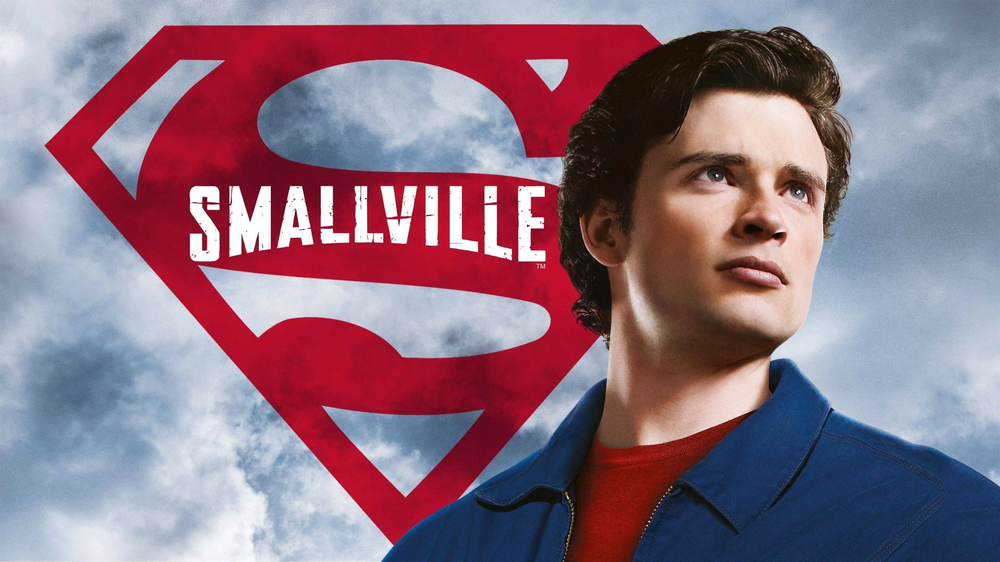

Smallville es una serie de televisión estadounidense que se emitió entre 2001 y 2011, centrada en la juventud de Clark Kent antes de convertirse en Superman. A lo largo de sus diez temporadas, la historia sigue su crecimiento en el pueblo ficticio de Smallville, Kansas, donde comienza a descubrir sus poderes y a enfrentarse a distintos desafíos tanto personales como sobrenaturales.
La serie combina elementos de drama adolescente, ciencia ficción y acción, mostrando no solo el desarrollo de sus habilidades, sino también sus relaciones con personajes clave como Lana Lang, Lex Luthor y Lois Lane. Uno de los ejes principales es la evolución moral de Clark y su lucha interna por definir quién quiere ser.
“Smallville” se destacó por ofrecer una visión más humana y cercana del mito de Superman, enfocándose en los conflictos emocionales, la identidad y la responsabilidad, bajo la premisa de “no vuelos, no traje” durante gran parte de la serie. Con el tiempo, se convirtió en una de las producciones más importantes del género en televisión, ampliando el universo de DC para una nueva generación de espectadores.
